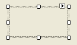
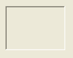
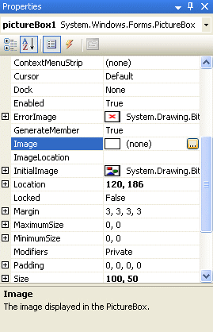
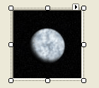
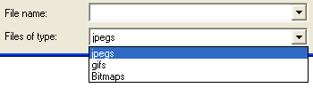
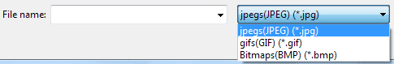

The View Images menu Item
This tutorial is part of an ongoing lesson. Click here if you haven't yet created a menu.
Download the images you need for this tutorial
It's easy to add an image to your form with VB.Net. To insert an image, locate the Picture control in the toolbox. Either double click the control, or hold down your mouse on the form and draw one out. You should see something like this:

Change the Height and Width properties of the Picture Box to 100, 100. You'll have a small square. To make it stand out more, locate the BorderStyle property. Change the value to Fixed3D. Your Picture Box will then look like this:

To add a picture at design time, locate the Image property in the properties box:

Download and unzip the image at the top of the page. Then click the button with the three dots on it. A dialogue box appears. Locate an image. Select it, and then click Open in the dialogue box. The image will appear in your Picture Box:

If you select an image that is too big for the picture box, only part if it will be visible. The Picture Box control does not resize your image.
You can, however, set another property of the picture box - the SizeMode property. Set this to AutoSize and your picture box will resize to the size of your image.
No more reading these lessons online - get the eBook here!
Insert an Image with your View Menu
You can use your open file dialogue box again to specify an image for the user to select. We'll do this from the View Images menu item.
Highlight you code for the mnuOpen item. (If you haven't yet coded for the File > Open menu item, click here.) Copy the first five lines, these lines:
Dim strFileName As String
openFD.InitialDirectory = "C:\"
openFD.Title = "Open an Text File"
openFD.Filter = "Text Files|*.txt"
Dim DidWork As Integer = openFD.ShowDialog()
Paste them to your mnuViewImages menu item code. Change the Title property to this:
openFD.Title = "Open an Image"
And change the Filter property to this:
openFD.Filter = "jpegs|*.jpg|gifs|*.gif|Bitmaps|*.bmp"
Run your code and click your View Images menu item. You should see the Open dialogue box appear. If you look at the "Files of type" box, you should see this:

Or this in later version of the Windows operating system:

You should now be able to see only the three image formats we've specified.
To insert an image into your Picture Box, some new code is needed. Again though, we'll wrap it up in an If Statement.
Add the following code below the lines you've just added:
If DidWork <> DialogResult.Cancel Then
strFileName = openFD.FileName
PictureBox1.Image = Image.FromFile(strFileName)
openFD.Reset()
End If
There's only two lines you haven't met yet. The first is this line:
PictureBox1.Image = Image.FromFile(strFileName)
Previously, you were loading the image into the Image property of PictureBox1 directly from the Properties Box (by clicking the grey button with the three dots in it). Here, we're loading an image into the Image property using code. The way you do it is with the FromFile method of the Image Class.
Although that might be a bit baffling at this stage of your programming career, all it means is that there is some in-built code that allows you to load images from a file. In between round brackets, you type the name and path of the file you're trying to load. Since our file name has been placed inside of the strFileName variable, we can just use this. You can then assign this to the Image property of a Picture Box.
The last line, openFD.Reset(), will reset the initial directory of the open file dialogue box. To see what this does, comment out the line (put a single quote at the start of the line). Run your programme and Click View > View Images. Insert an image and then click File > Open. You'll notice that the files displayed in your dialogue are from the last directory you opened, rather than the one you set with "InitialDirectory = "C:\". By resetting the open dialogue box control, you're fixing this problem.
OK, that concludes our look at menus. We'll create a new programme now, and explore checkboxes, radio buttons and Group Boxes